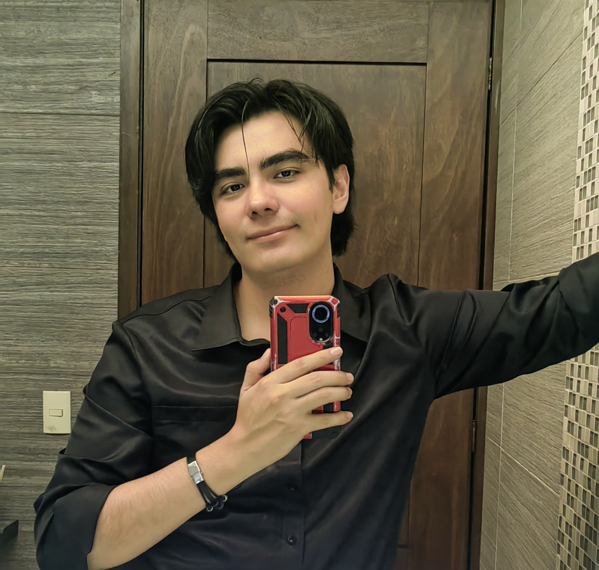
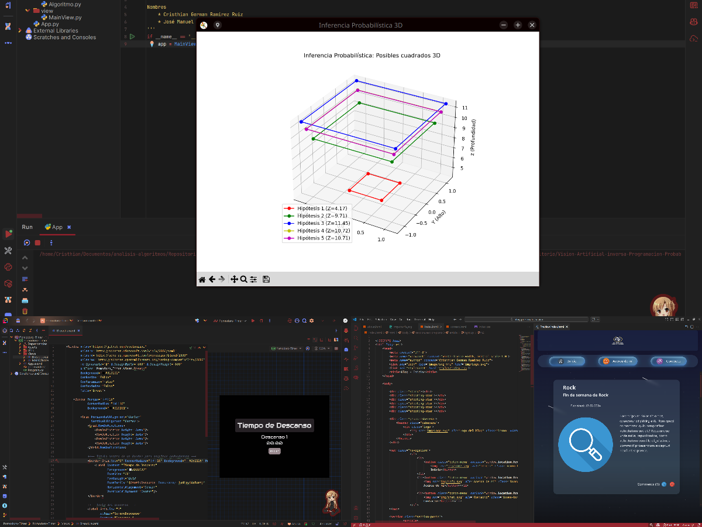
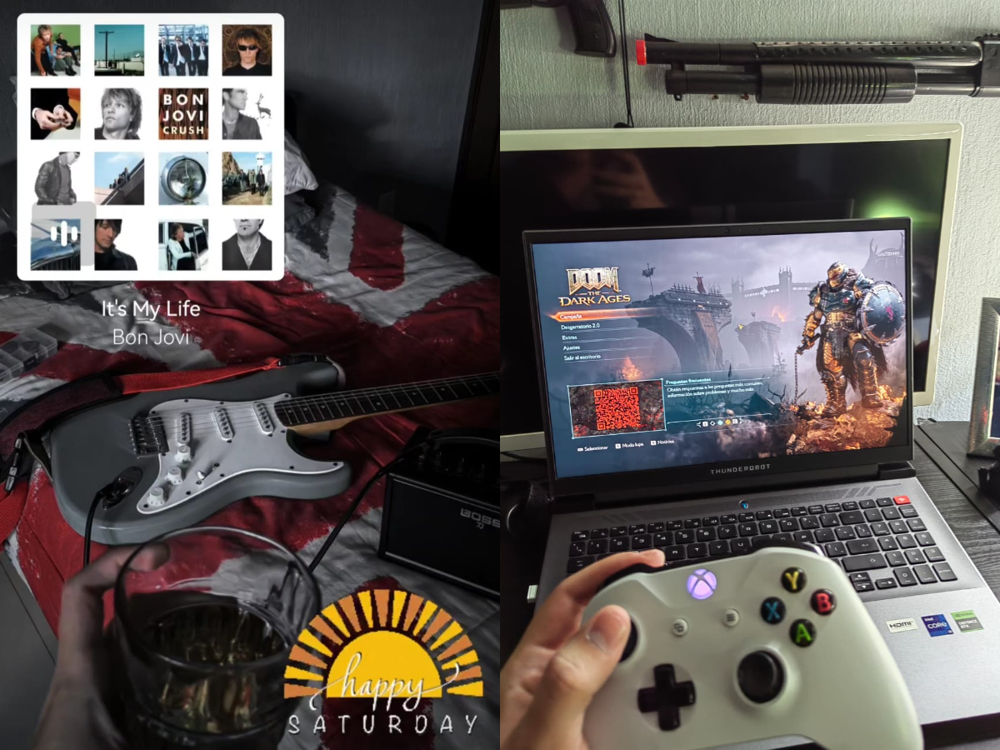

Sobre mí
Conoce un poco más sobre mí

¡Hola! Soy Cristhian German Ramirez Ruiz, un entusiasta de la tecnología y el desarrollo de videojuegos y de aplicaciones. En unos años seré un ingeniero en computación cuyo sueño es crear videojuegos increíbles que expresen emociones y cuentes increbles historias, ademas de crear aplicaciones útiles para ayudar a las personas. Nací en la ciudad de Guadalajara, Jalisco, México, en el año 2004. Actualmente estudio Ingeniería en Computación en la Universidad de Guadalajara, en el Centro Universitario de los Altos. y vivo en la ciudad de Tepatitlán de Morelos.
Mi trayectoria
Conoce mi camino "profesional"

Cuando era niño, tenia una extraña afición a desmontar y volver a montar diferentes aparatos electrónicos para ver como funcionaban internamente. a los 10 años, cuando recibí mi primer consola, descubrí lo que eran los videouegos, y me encantó. Por esa razón decidí estudiar ingeniería en computación con el fin de crear cosas nuevas. Tanto videojuegos como programas y aplicaciones. Actualmente estudio Ingeniería en Computación en la Universidad de Guadalajara, en el Centro Universitario de los Altos. Si bien mi escuela no tiene la capacidad de enseñarme a crear videojuegos, mi meta es aprender a crear videojuegos por mi cuenta, y poder desarrollar mis propios juegos.
Mis pasatiempos y aficiones
Conoce mis hobbies y actividades favoritas

Entre mis pasatiempos y aficiones, destaco mi amor por los videojuegos, especialmente los de acción, disparos y carreras, gracias en parte a los videojuegos, me decidí por estudiar ingeniería en computación. También disfruto de la música, escuchando géneros como rock y sus diferentes subgéneros. Toco guitarra en mi tiempo libre desde que tenía 12 años. Al inicio mi mamá me compró una guitarra clásica y me dijo que si aprendía a tocarla me regalaría un iPad, nunca me la regalo, pero gracias a eso descubrí mi pasión por la música y la guitarra.